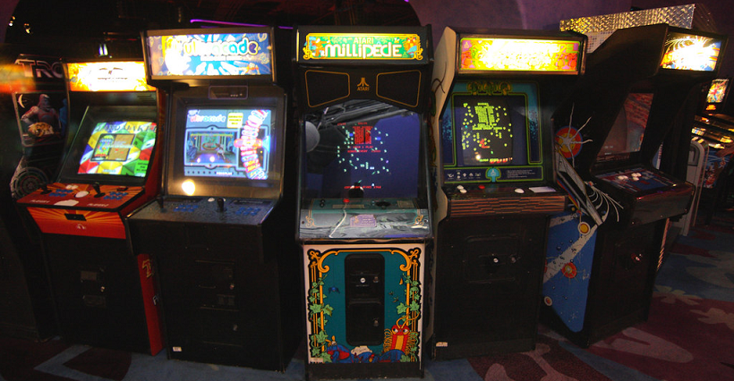

EL ARTE DEL VIDEO ARCADE
En medio de botoneras antiguas y palancas para reparar o simplemente desarmar un control de las nuevas máquinas de PlayStation o Xbox, se encuentra alguien que con nostalgia, arma unas máquinas que a todo adulto con corazón de niño puede provocarle más que una lágrima, quizás una inmensa alegría.
Trabajamos armando arcades artesanalmente,
valorando el hecho de respetar el diseño y la jugabilidad de antaño
haciendo de lo “retro” un hobby apasionante.
Trabajamos armando arcades artesanalmente,
valorando el hecho de respetar el diseño y la jugabilidad de antaño
haciendo de lo “retro” un hobby apasionante.